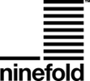
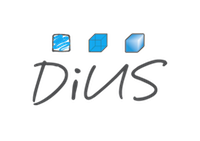
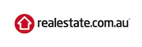

Hello world!
Rails Girls comes to Sydney! During the free two-day workshop we'll dive into the magical world of Ruby on Rails.
We're full up for this time around, but stay tuned! We're planning more Rails Girls events!
You learn designing, prototyping and coding with the help from our coaches.
You need your own laptop, curiosity and a sprinkle of imagination!
Want to help? We are looking for volunteers and Rails coaches. Email us.
| 18.00 - 23:00 |
Installation partyWe'll get all the tools needed installed on your laptop (remember to bring it along!). We'll also have dinner together, enjoy some drinks and do a Friday Hug! |
|---|
| 9:00 - 10:00 |
Registration and coffeeDuring the morning we’ll have some coffee so that we're all set for a great day of Rails Girls! |
|---|---|
| 10:00 - 10:15 |
WelcomeOutline of the day & word from sponsors |
| 10:20 - 13:00 |
Tryruby.orgLet's get coding! |
| 10:20 - 13:00 |
PresentationsWhile you get coding with our great coaches, we'll have some presentations which address some of the tools you need in your belt to build web apps. |
| 13:00 - 13:30 | Lunch#omnomnomnomnom |
| 13:30 - 18:00 |
Build an AppWith all your newfound ruby skill and associated knowledge, work with our mentors to build and deploy a real live web app! |
| 18:00 - Late |
AfterpartyAfter you've successfully built your app, it's time to celebrate!Open for everyone, meet cool people interested in tech. |
Location: Ninefold, 2 Market St, Sydney 2000
Rails Girls Sydney is co-organized with our awesome partners.
 Ninefold is a hosting provider with on demand servers in two availability zones in Sydney and another in Silicon Valley.
 DiUS computing is an Australian technology services company that helps clients innovate and grow.
 realestate.com.au is Australia's premier online real estate marketplace. Powered by Ruby on Rails.
 Lookahead Search are focused on hiring Rails on Rails developers in Sydney and Melbourne. Our recruiters know their stuff and come from a technical backgrounds.
Lookahead Search are focused on hiring Rails on Rails developers in Sydney and Melbourne. Our recruiters know their stuff and come from a technical backgrounds.
 reInteractive is Australia's largest Ruby on Rails focused web development company. We make results driven web sites, guaranteed.
reInteractive is Australia's largest Ruby on Rails focused web development company. We make results driven web sites, guaranteed.
 Envato is an ecosystem of sites to help you get creative. From our world leading digital marketplaces where you can buy or sell stock, project files and creative assets for virtually any medium, through to our education network of tutorials and courses.
Envato is an ecosystem of sites to help you get creative. From our world leading digital marketplaces where you can buy or sell stock, project files and creative assets for virtually any medium, through to our education network of tutorials and courses.
How much does the workshop cost? Nothing, it's free! You just need to be excited!
Will there be coffee? Hells yeah.
Who is this aimed for? Women of any age with basic knowledge of working with a computer. We’ve had people of all ages taking part. Most of the speeches are given in english, but small group work is done in german. Please bring your laptop.
Can men attend? Yes, but you need to be accompanied by an interested lady. Also, girls are given a priority.
I know how to program - How can I help? We’re also looking for people to be coaches. We’ll have a two-three hour workshop before the event to walk you through the curriculum. Email us